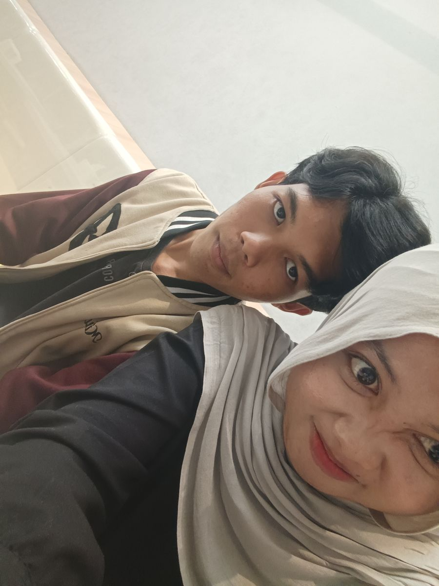
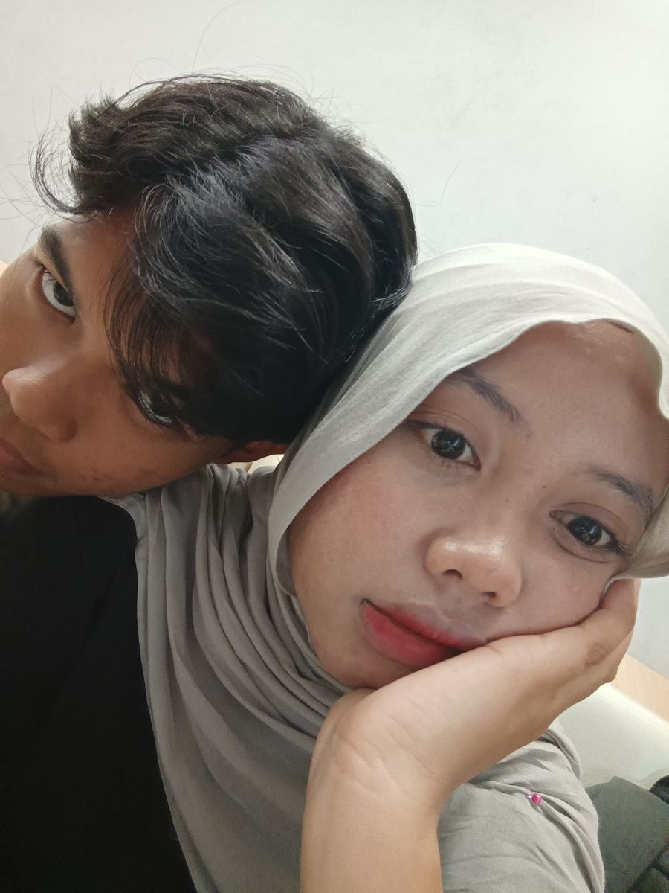

Untuk Kamu
Pelan-pelan,
Tapi Sungguh-sungguh
♪ Nyalakan musik sebelum membaca
— dariku
Halaman Satu
Syukur yang Sederhana
Kamu tahu nggak, aku tuh sering kepikiran betapa nggak semua orang bisa punya orang kayak kamu di hidupnya.
Sampai sekarang aku nggak pernah tahu pasti kenapa kita dipertemukan, dan aku juga nggak perlu tahu. Yang aku tahu, aku senang banget kita dipertemukan.
Sejak kenal kamu, ada rasa tenang yang nggak aku duga sebelumnya. Kayak hari-hariku jadi punya tempat pulang yang sederhana.
Aku cuma mau bilang: makasih, kamu udah ada.
Halaman Dua
7 Oktober, di Kafe
Hari itu kita cuma pergi ke kafe. Makan, minum, ngobrol. Nggak ada yang mewah, nggak ada yang sengaja dibikin khusus.
Tapi jujur, aku pulang dengan perasaan yang penuh. Obrolannya enak, aku nggak perlu jadi orang lain, dan kamu tetap jadi kamu — yang buat aku tenang, yang buat aku mau mendengar.

Kita nggak pernah menyebutnya apa-apa, dan aku nggak masalah. Buat aku, itu tetap jadi salah satu hari yang paling aku syukuri.
Momen paling berarti ternyata nggak perlu ramai — cukup kamu ada di sana.
Halaman Tiga
Yang Aku Kagumi dari Kamu
Ini yang aku suka, dan aku nggak lebay sama sekali.
Sabar. Kamu nggak pernah bikin aku ngerasa buru-buru. Aku juga ngerti bahwa kamu butuh waktu, dan itu bukan hal yang mudah dilakukan orang.
Perhatian. Cara kamu memperhatikan itu tidak sering dipamerkan, tapi terasa. Kamu memperhatikan hal-hal kecil dan itu yang bikin aku merasa sungguh-sungguh dijaga.
Dewasa. Kamu bisa ngomong dengan jujur tanpa nggak nyaman, dan aku belajar banyak dari cara kamu menyikapi hal-hal kecil.
Cara berpikirmu. Kamu banyak berpikir sebelum bicara, dan itu bikin aku percaya kamu adalah orang yang tahu apa yang sedang kamu lakukan.
Dan banyak hal lain yang sama antaraku dan kamu — tentang cara kita menilai sesuatu, tentang apa yang kita anggap penting. Itu bikin aku merasa nggak sendirian.
Halaman Empat
Nyaman Tanpa Dipaksa
Aku suka cara kita satu sama lain. Aku suka bahwa kamu nggak pernah memaksa kita harus jadi apa. Aku suka karena kamu masih malu kalau bertatapan terlalu lama, dan kamu masih menjaga batasmu.

Itu bukan hal yang perlu diperbaiki. Buat aku, itu bagian dari ketulusan yang bikin aku nyaman — bahwa semua yang terjadi antara aku dan kamu berjalan dengan caranya sendiri.
Aku nggak akan pernah memaksa apa pun. Aku mau kamu tetap merasa aman, dan aku mau kita menikmati setiap tahap yang ada tanpa harus disegerakan.
Aku pilih jalan pelan-pelan, dengan kamu.
Halaman Lima
Terima Kasih yang Dalam
Makasih sudah mau ketemu waktu itu, makasih sudah mau meluangkan waktu hanya untuk hal sederhana kayak gitu.
Makasih juga sudah memberi aku kesempatan untuk lebih mengenal siapa kamu — bukan cuma versi kamu di layar, tapi versi kamu yang sebenarnya.
Terima kasih atas perhatianmu — untuk hal-hal kecil yang mungkin buatmu biasa, tapi buat aku berarti.
Terima kasih sudah hadir. Bukan hanya di percakapan kita, tapi sungguh-sungguh ada untukku.
Penutup
Untuk Waktu ke Depan
Aku nggak mau janji-janji jauh, dan aku nggak mau kita bahas hal-hal yang belum waktunya. Aku cuma mau kita jalan pelan-pelan, tetap saling kenal, dan menjaga apa yang sudah kita punya.
Aku mau lebih banyak momen sederhana bareng kamu. Ngobrol panjang, ketemu sesekali, dan hal-hal kecil yang lama-lama jadi tempat kita pulang.
Aku nggak tahu cerita kita akan sejauh apa.
Tapi kalau suatu hari nanti aku mengingat hari itu, aku yakin aku akan selalu tersenyum.
Karena hari itu, aku pulang dengan satu perasaan sederhana:
aku senang pernah menghabiskan waktu bersamamu.
Dari aku, untuk kamu.